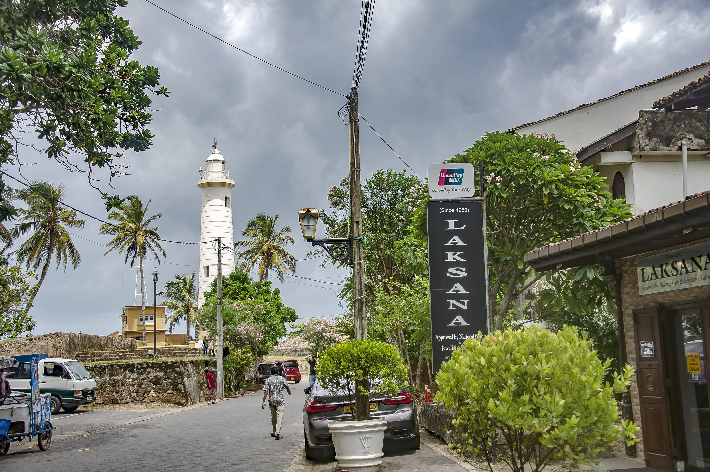

Sri Lanka | Galle
Galle is a city on the southwest coast of Sri Lanka. It’s known for Galle Fort, the fortified old city founded by Portuguese colonists in the 16th century. Stone sea walls, expanded by the Dutch, encircle car-free streets with architecture reflecting Portuguese, Dutch and British rule. Notable buildings include the 18th-century Dutch Reformed Church. Galle Lighthouse stands on the fort’s southeast tip.
Area: 16.52 km²
Elevation: 0 cm
Weather: 28°C, Wind W at 16 km/h, 79% Humidity
Province: Southern Province
Population: 93,118 (2020)
Area code: 091